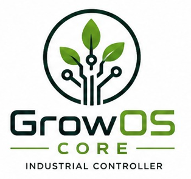

⚙
Automação Industrial
Controle de processos essenciais com lógica confiável, operação padronizada e resposta inteligente.

GrowOS COREPlataforma desenvolvida para automatizar, monitorar e gerenciar cultivos profissionais com precisão, confiabilidade e simplicidade.
O GrowOS Core integra automação industrial, monitoramento em tempo real e banco genético em uma experiência criada para cultivos profissionais.
Controle de processos essenciais com lógica confiável, operação padronizada e resposta inteligente.
Dashboards objetivos para acompanhar indicadores críticos e tomar decisões com segurança.
Organização de genéticas, ciclos, histórico e resultados para gestão técnica do cultivo.
Indicadores, estados operacionais e informações agronômicas em um painel único e fácil de interpretar.
Envie uma mensagem para conversarmos sobre automação, monitoramento e gestão de cultivo profissional.